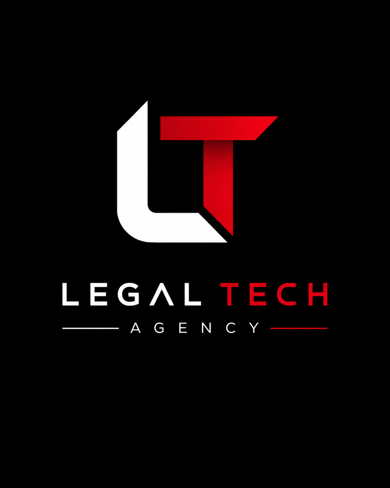

Founder
Mengembangkan layanan, mengelola operasional, dan menerjemahkan kebutuhan legalitas serta digitalisasi menjadi proses yang dapat dikembangkan.
PROJECT 01 / LEGAL SERVICES & DIGITAL TRANSFORMATION
Inisiatif layanan profesional yang mengintegrasikan kebutuhan legalitas usaha dengan pengembangan solusi digital.

Mengembangkan layanan, mengelola operasional, dan menerjemahkan kebutuhan legalitas serta digitalisasi menjadi proses yang dapat dikembangkan.
Business legalization, corporate administration, website development, digital administration systems, dan business digitalization.
Website development, GitHub, Netlify, workflow automation, dan AI-assisted development sesuai kebutuhan proyek.
Portofolio ini menampilkan ruang lingkup inisiatif tanpa membuka informasi rahasia klien atau hasil yang belum diverifikasi.